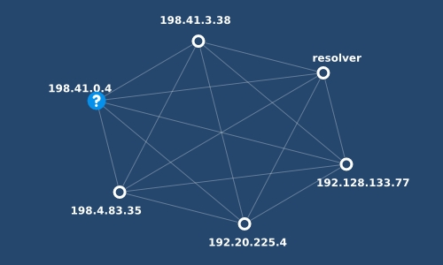

|  | DXQ: Managing Distributed System Resources with Distributed XQuery |
Interface ::= interface namespace NCName = URILiteral; InterfaceProlog;
Module ::= module namespace NCName = URILiteral (implements URILiteral)?; ModuleProlog
InterfaceImport ::= import interface namespace NCName = URILiteral
Expr ::= ... (: XQueryP :)
| let server NCName implement NCName at Expr return Expr
| from server NCName return Expr
| at server NCName do Expr
DXQ is implemented in the Galax XQuery architecture, which compiles XQuery programs into an algebraic representation (a query plan) that is exchanged by DXQ servers. This plan is enclosed into a remote closure which allows to ship an arbitrary expression and encapsulates whatever context is necessary to evaluate the expression remotely. Galax's hybrid algebra includes XML "tree" operators and classic tuple operators. The latter permit efficient implementation (the Optimizer stage) of common query idioms like join an group-by, which are expressed by nested FLWOR expressions in XQuery. The optimized plan is evaluated based on the code selection performed on the server.
The extension relies on a simple client-server protocol based on HTTP that permits the communication between DXQ peers.
galaxd reads the programs of the DXQ servers from DXQ source files. It can either create a network with nodes on different machines, or simulate one on localhost, based on the programs from a given directory. For the full option list, try `galaxd -help'. For the purpose of this demo, we'll show a local simulation, which can be run by going into the directory containing the distributed application and typing:
$ galaxd -language xquerybang -dxq on -s .
The main example we focused on, in the beginning, is a distributed DNS application. The DNS network is formed by servers and resolvers, each running its own program. We focused on the core functionality of DNS. The complete description of the protocol and its features is detailed in RFC1034 and RFC1035.
In order to separate the common interface exported by the peers in a DXQ network from the implementation, we needed to extend the XQuery module system with the notion of interface. For instance, all our DNS servers implement export the interface below:
interface namespace Server = "http://www.dns.org/Server"; declare function Server:RR() external; declare function Server:down($hostname as xs:string) external;
RR() function returns the resource records
of that server. It is typically called by a DNS resolver which
interrogates servers.
down() function tries to resolve a URL both by using the
addresses locally stored and by calling other authoritative servers
specified in its resource records. It is used in a peer-to-peer
scenario, when the servers are willing to perform recursive resolution.
The lookup function takes as argument the address of the first server to be asked and the hostname whose address are looking for. It starts by retrieving the addresses stored on the server and continues, recursively, by sending requests to other servers to which it is referred.
import interface Server = "http://www.dns.org/Server";
import module U = "DNSUtility";
declare function R:lookup($x,$n) {
let server S implement Server at $x return
<rr>{
from server S return S:RR()/a[@hostname=$n],
for $ns in (from server S return S:RR()/ns)
for $a in (from server S return S:RR()/a)
where $ns/@nameserver=$a/@hostname
and fn:not($ns/@domain=".")
and glx:dns-lt($ns/@domain,$n)
return
R:lookup($a/@address,$n)/a
}</rr>
};
In the non-optimized version, the resolver first makes an exec call to get all
the nameserver records, then another one to get all address records and joins
them locally to find out the addresses of servers that could answer its query,
based on the result of the glx:dns-lt() function.
With DXQ optimizations turned on, the join is pushed inside the exec call and executed on the server, by rewriting the body of the lookup function as below:
let server S implement Server at $x return
<rr>{
from server S return S:RR()/a[@hostname=$n],
for $a in
from server S return {
for $ns in (from server S return S:RR()/ns),
$a in (from server S return S:RR()/a)
where $ns/@nameserver=$a/@hostname
and fn:not($ns/@domain=".")
and glx:dns-lt($ns/@domain,$n)
return $a
}
return
R:lookup($a/@address,$n)/a
}</rr>
This reduces the number of requests sent to a server from 3 to 2: one
for the address of the looked-up name and one for the addresses of the
relevant nameservers (which is the result of the join on the server).
For the example in our demo, where the exchange of messages ends after
asking two servers, it means reducing the total number of messages
from 14 to 10.
Please note that in the optimized case, the servers also return tables
of tuples containing the bindings found by the join in the second
argument of the second exec. In the non-optimized case, exec sends
only path expressions, hence all responses are XML trees.
The nameservers in our application can also act as nodes in a
peer-to-peer network and perform name resolution by
themselves. In the example we provide, a server is directly ask to
resolve a name which is not in its database, hence it will delegate
the query to another server which is able to answer it, by calling by
calling its S:down() function. As the latter doesn't have
a relevant record, it needs to delegate the request to a third server
which is finally able to answer. The answer is sent back by reversing
the chain of requests.
For reasons of scalability, most DNS implementation do caching at
various levels. In our example, we added a cache on the resolver. The
iterative lookup() is modified to first inspect its local cache and to
stop if it finds an answer there. Otherwise, it proceeds as before,
updating the cache each time a new answer is found. All resource
records contain a TTL field, representing
the maximum number of seconds that the record can be stored in the
cache. Also, the TTL has to be regularly updated, because it may be
used by other servers along a path of requests, in case they decide to
do caching. In our DXQ program, these specifications are implemented
by do replace and do delete XQuery Update
statements.
In our demo we first ran the same lookup as before and we display the exchanged messages. Then, we call that lookup again and this time the query is answered using information from the cache. Thus, event no. 10 (from the first lookup) and event no. 12 (from the second lookup) give the same address as answer, but with different TTL's.
Using an architecture similar to the one from the DNS example, we can
build a multicast service in a peer-to-peer network. The main
ingredients allowing this are a node's capacity to export data and to
delegate queries to other nodes.
The interface exported by the peers consists in:
deliver() function that processes a request.multicast() function that tries to process the
request locally and also delegates it to relevant nodes by calling
asynchronously their own multicast().deliver() and
multicast() may not be the same on all nodes, giving a
lot of flexibility in the implementation of the protocol.
Narada is a mesh overlay network in which nodes can dynamically enter and leave the mesh overlay and which provides infrastructure for routing and multicast. Overlay networks like Narada are interesting test cases for DXQ, because they require periodic, asynchronous messages to maintain protocol state, and the state includes membership and routing tables that can be naturally described and manipulated in XML. More details are available in the JSAC paper.
The core functionality of the protocol is simulated by 3 top-level functions:
interface namespace Narada = "narada"; declare updating function Narada:depart() as empty-sequence() external; declare updating function Narada:die() as empty-sequence() external; declare updating function Narada:go() as empty-sequence() external;
depart(), as its name suggests, provokes an explicit departure from the
network.
die(), on the other hand, makes the node die without any warning
for its peers.go() function implements the main functionality by
updating local state and sending various kinds of messages: